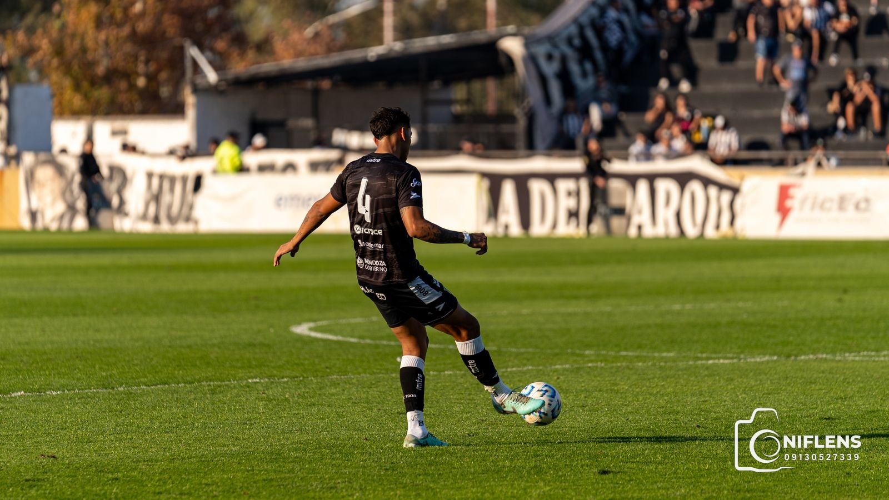

Who we are
Photography for football people.
NIFLENS exists for one reason: football deserves to be documented properly. Whether it is a Sunday-league fixture, an academy training session or a player building a profile for trials, the work should look like it belongs in professional sports media.
We photograph matchdays, training sessions, players and football events, and we edit player highlight videos that are tight, honest and watchable. Everything is delivered through private galleries, where players and clubs choose their photos and receive the full-quality files.
We would rather earn trust with consistent work than loud promises. Show up, shoot well, deliver properly.
What we value
The approach
The game first
Football has rhythm. Good football photography respects it: positioning, patience and knowing what a moment is worth before it happens.
Player development
Players need real footage for trials, profiles and progress records. We produce imagery that helps people move forward in the game.
Visual storytelling
Every match and session has a story: the buildup, the effort, the detail. Our job is to find it and frame it cleanly.
Professional delivery
Photos are delivered in private galleries with secure, single-use download codes. Original quality, protected, on time.
Consistency
Clubs and academies need a look they can rely on across every fixture and session. Same standard, every time.
Respect for the work
Players, coaches and clubs trust us with their moments. We handle the images, the access and the data with care.
Let's work
Get NIFLENS
on your touchline
Matchday coverage, training shoots, player portraits and highlight edits.
Work With NIFLENS